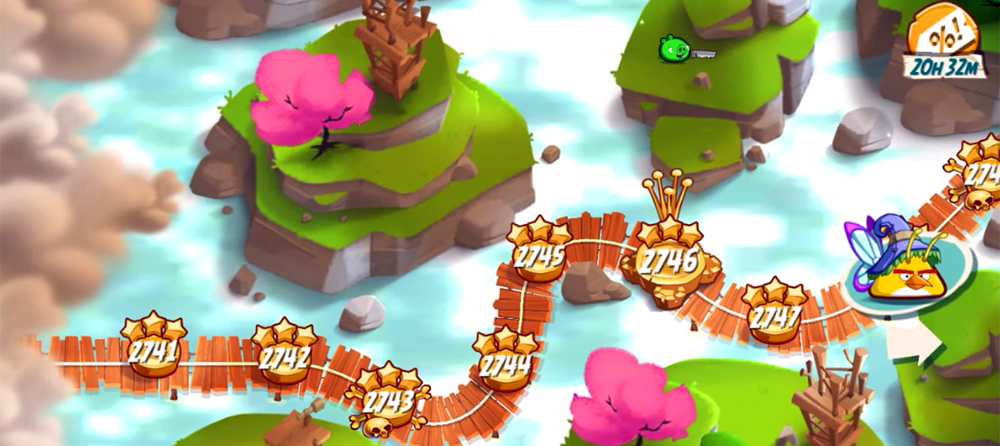
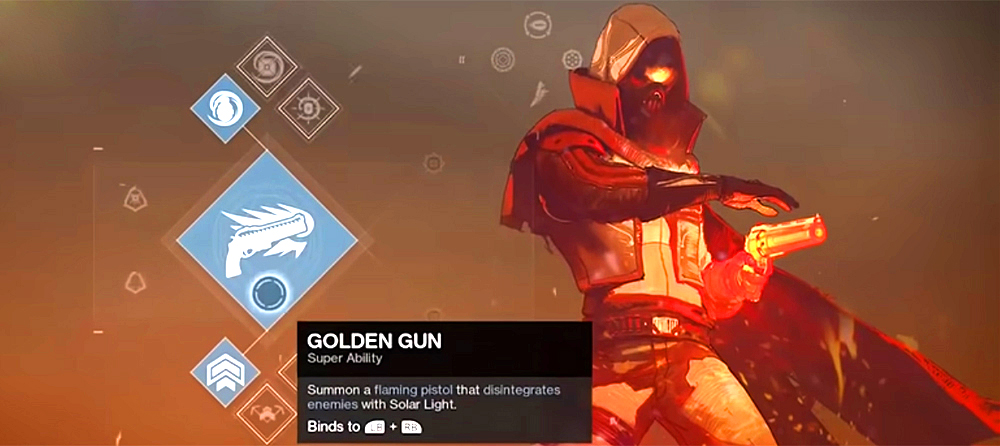
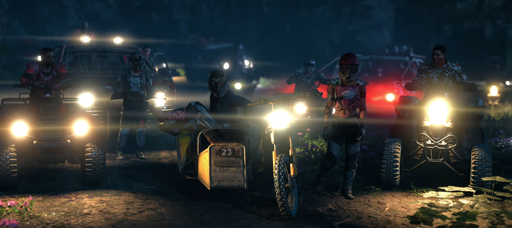

Přiblížení práce herního designera, cíle, herní mechaniky, žánry, kategorie.
článek 1Učení hry, intuitivnost a zábava, procházení a proměny světa, doplňování příběhu, riskování, postupy při práci herního designera.
článek 2Rozdíl UI a UX, herní položky, přesnost a přehlednost, ovlivňování obtížnosti, UI jako součást světa, využití barev, zajímavá místa.
článek 3Nové designy nepřátel, sada útoků - moveset, interakce s nepřítelem, reskin nepřátel, design lidí, obtížnost a její úpravy.
článek 4Balancování hry, symetrické a asymetrické hry, rozpočet síly, buffy a nerfy postav, countery, procentuální výhernost.
článek 5Prezenční studium bakalářské (3 roky) a navazující magisterské (2 roky). Důraz je kladen na produkci 2D a 3D grafického obsahu. Absolventi budou připraveni pro práci v designerském studiu.
Magisterský studijní program (2 roky) je určený pro absolventy bakalářského a magisterského vysokoškolského studia. Program je prezenční, dvouletý. Absolvent je připravený pracovat na pozici: herní designér, level designér, herní scénárista, kreativní manažer v herním studiu.
Studijní program je určený pro absolventy bakalářského a magisterského vysokoškolského studia. Přijímací řízení se skládá z talentové a ústní zkoušky. Výuka je prezenční. Studenti si vyzkouší celý proces tvorby hry a jednotlivé herní profese.
Distanční kurz herního designu ve formě večerní online výuky za 14.700,- Kč. Lze absolvovat při zaměstnání či studiu. Absolvent získá potřebné znalosti pro nástup na juniorskou pozici do herního studia i kontakty na lidi z oboru.
Kanadský herní designér známý díky tvorbě série Assassin's Creed. Je také známý jako režisér filmu Prince of Persia: The Sands of Time od Ubisoftu. V roce 2014 založil montrealské nezávislé studio Panache Digital Games, kde pracoval na hře Ancestors: The Humankind Odyssey.
Získal bakalářský titul ve filmových studiích a literatuře na University of Montreal. Pochází z filmového prostředí a svou tvůrčí vizi využil k formování her, ve kterých se ujal kreativního vedení. Mezi další tituly Désiletse patří Disneyho Donald Duck: Goin' Quackers a Hype: The Time Quest.
Japonský designér videoher, producent a herní režisér, působící ve společnosti Nintendo. Je považován za jednoho z nejvýznamnějších herních designérů v historii. Je tvůrcem některých z nejprodávanějších her všech dob, včetně Mario, The Legend of Zelda, Donkey Kong...
Jeho hry byly vlajkovou lodí každé videoherní konzole Nintendo, od arkádových automatů z konce 70. let až po současnost. Řídil softwarovou divizi Nintendo Entertainment Analysis & Development, která vyvinula mnoho her pro Nintendo, a hrál důležitou roli při vytváření dalších vlivných her, jako jsou Pokémon Red and Blue a Metroid Prime.

Americký režisér, designér a producent videoher. Založil vývojové studio New World Computing a v roce 1986 debutoval jako designér knihou Might and Magic Book One: The Secret of the Inner Sanctum.
Z dílny New World Computing pochází jedna z prvních her na hrdiny – středověká fantasy Might and Magic: Secret of the Inner Sanctum. V roce 1990 Jon Caneghem vydal King's Bounty, předchůdce série sedmi her Heroes of Might and Magic, které obsahují tahové konflikty s fantasy tématikou, ve kterých hráči ovládají armády mýtických tvorů.
Jon Caneghem byl uveden do Síně slávy světa počítačových her v roce 2004 za strategii a hraní rolí.
Japonský kreativní ředitel, designér, scénárista a výkonný ředitel videoherní společnosti FromSoftware. Stal se známým díky režii série Souls. V roce 2014 byl povýšen na prezidenta společnosti a působí také jako její zástupce ředitele.
Mezi další pozoruhodné hry, které režíroval, patří Bloodborne, Sekiro: Shadows Die Twice a Elden Ring, které všechny získaly uznání kritiků a získaly několik cen. K významným projektům patří také hra pro virtuální realitu Déraciné a akční adventura Sekiro: Shadows Die Twice.